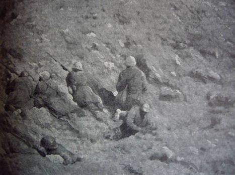
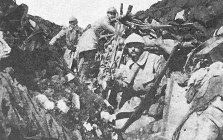
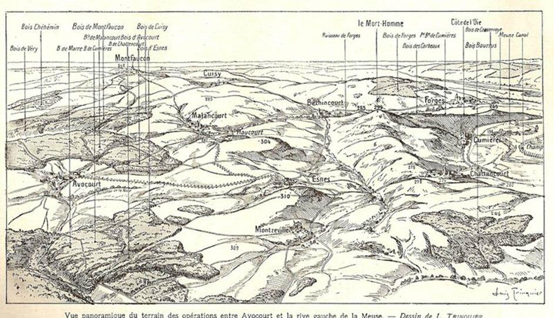
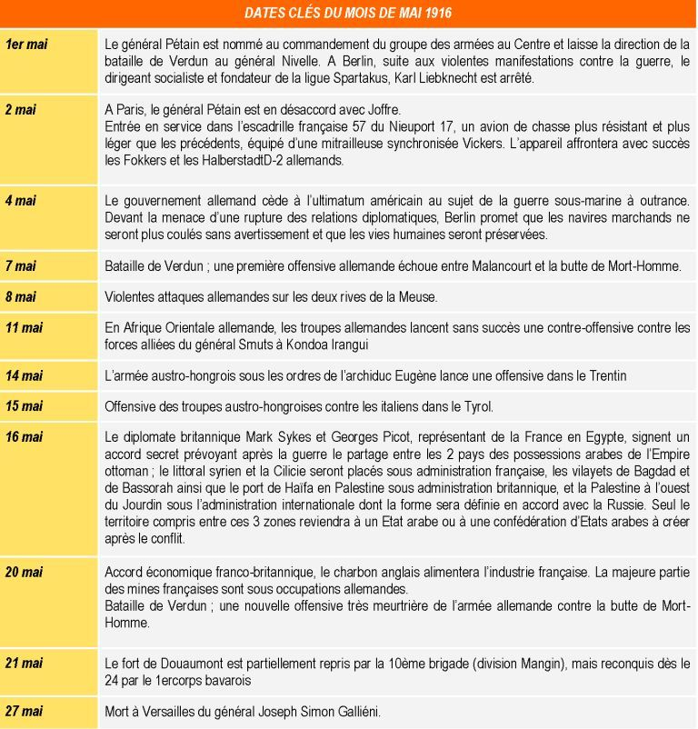

La guerre entre dans son 639ème quand le mois de mai débute. Si l'on excepte Verdun, le front britannique est actuellement plus actif que le front français : l'ennemi n'a d'ailleurs pris l'offensive que sur quelques parties de ce vaste front, en Artois ; en Picardie, au contraire, ce sont les troupes britanniques qui ont l'initiative de l'attaque.
Du lundi 1er mai 1916 au dimanche 7 mai 1916
Sur les fronts Belge et Français
En Flandre française, entre Armentières et Frelinghien, comme entre Ypres et la Lys, les bombardements se continuent, terribles, sans que nos Alliés faiblissent : les Anglais, commandés par le général Haig, tiennent, comme nous tenons à Verdun, soutenus par les Belges qui, dans le secteur de Dixmude, ont pris sous le feu de leur artillerie les batteries allemandes et les chalands qui servent au transport des munitions, sur le canal d'Oandzaense.
Cette semaine, regain d'activité en Champagne, consistant presque exclusivement en des combats d'artillerie.
Il y a 76 jours écoulés depuis le moment où le Kronprinz a lancé ses armées à l'assaut de Verdun : toujours repoussé, souvent refoulé, il renouvelle ses attaques, mais on sent son élan et sa détermination mollir; il serait prématuré de considérer la bataille de Verdun comme terminée, l'attaque, repoussée d'ailleurs, de la cote 304, le montre; cependant les critiques militaires constatent que l'action devient ici languissante.
Au nord du Mort-Homme, les Alliés repoussent les Allemands au-delà de la ligne qu'ils occupaient dans la première quinzaine de mars.
Sur le front de Douaumont et en Woëvre, les troupes françaises ne restent pas non plus inactives : elles occupent, dans la région de Douaumont, 500 mètres de tranchées ennemies, et en Woëvre notre artillerie lourde canonne inlassablement les chemins de fer militaires et les magasins de ravitaillement allemands.
Le général Pétain est nommé commandant en chef des armées du Centre, comprenant le secteur de Soissons à Verdun, et le général Nivelle, colonel lui aussi au début de la guerre, lui succède à la tête de l'armée spéciale de Verdun.
Sur le front russe
Aucune bataille importante ne s'est produite cette semaine, ni sur le nord du front russe, ni en Galicie.
En Asie-Mineure, l'occupation du littoral de la mer Noire par une partie de l'armée du grand-duc Nicolas se poursuit. L'autre partie, qui avait occupé Bitlis, marche sur Diarbékir; l'aile gauche occupe Sert Diarbékir se trouve à 170 kilomètres au sud-ouest de Bitlis, dans la région montagneuse la plus voisine de la Mésopotamie : de là, l'armée devra se diriger sur Bagdad, par Mossoul.
Du lundi 8 mai 1916 au dimanche 14 mai 1916
Sur les fronts belge et français
Bien que l'empereur allemand continue à concentrer sur Verdun l'action principale de ses armées, une offensive importante de l'ennemi paraît se dessiner dans le secteur nord : déjà, vers Ypres, vers Albert, vers Carency, vers Hulluch, le kronprinz de Bavière, le prince Ruprecht, tâte le terrain, et l'objectif de la percée serait Arras; entre Ypres et Armentières, le bombardement réciproque est d'une telle violence que, par endroits, les tranchées des deux côtés sont démolies et que l'infanterie combat en quelque sorte à découvert.
Voici trois mois que continue la bataille de Verdun : après chaque ruée formidable de l'armée du kronprinz, le combat languit, s'éteint, semble terminé et, tout à coup, reprend avec plus de violence. Au commencement de cette semaine, la 92ème semaine de la guerre, les pentes du Mort-Homme et celles de la cote 304 ont subi les plus violents bombardements qui aient marqué cette guerre pourtant si fertile en grandes actions d'artillerie ; à la cote 304, après une effroyable canonnade de trente-six heures, l'assaut allemand s'est déclenché : les trois colonnes, fortes d'une division chacune, ont été repoussées et brisées par nos feux.
Les Français reprennent des éléments de tranchées et de boyaux qu'avait occupés l'ennemi. Les attaques allemandes ont donc été inutiles et leur échec signifie une fois de plus qu'au nord-ouest de Verdun la route est barrée.
Sur les fronts russes
Dans les cercles compétents russes, l'opinion prévaut que les Allemands préparent une grande offensive sur ce front avec une action combinée des forces de terre et de mer : ils débarquent à Libau des canons qui sont transportés dans la direction de Muravievo, derrière le front Riga-Dwinsk ; l'évacuation de postes inutiles dans les régions de Mitau et de Touckou indique que les Allemands font, leurs préparatifs pour une lutte qui comprendra tout le vaste secteur de la ligne de combat de Riga.
Pour le moment, les communiqués russes ne signalent que des duels d'artillerie dans les régions de Jacobstadt et de Dvinsk et dans la direction de Baranovitchi, puis à l'est de Kolki et au nord de Tsirin. Les communiqués allemands donnent la même note : on doit conclure qu'aucune action d'ensemble n'est encore engagée.
Toute autre est la situation en Asie-Mineure où les Russes multiplient leurs avantages : en Arménie, l'avance russe se continue dans trois directions, vers Erzingan, Diaberkir et Badgdad; mais il faut se garder de croire que les assaillants soient déjà aux portes de ces villes, ces noms indiquent seulement les directions des colonnes.
Du lundi 15 Mai 1916 au dimanche 21 Mai 1916
Sur les fronts belge et français
L'action est devenue de plus en plus active, cette semaine, la 93ème semaine de guerre, sur presque tous les fronts.
Au nord d'Arras, près de Neuville, les Anglais ont pu pénétrer dans quelques tranchées ennemies; de même, dans une autre partie de l'Artois, à Auchy, près de la Bassée. L'activité sur ces lignes est due autant à l'initiative britannique qu'aux Allemands; mais ce sont des actions de détail. Plus au nord, les armées de liaison françaises et belges continuent à appuyer l'action anglaise près de Steenstraete, sur la rive droite de l'Yser.
Le colonel Repington explique à ses compatriotes qu'il faut maîtriser leur impatience :
« Nous ne pourrons songer à attaquer avec succès quarante divisions allemandes solidement constituées, bien retranchées, que lorsque nous aurons la supériorité nécessaire pour assurer le succès; d'ici là, les Anglais doivent contenir les divisions allemandes et permettre aux Français d'épuiser l'ennemi devant Verdun. »
C'est sans causer aucune surprise qu'après une période d'accalmie les communiqués annoncent aux Français de nouvelles attaques allemandes d'une extrême violence, dans la région d'Avocourt et de la cote 304. Dans le secteur ouest et sur les pentes nord du Mort-Homme, l'ennemi, après une série d'assauts infructueux, rendus meurtriers par nos tirs de barrage, est parvenu à occuper quelques éléments de tranchées avancées.
Un communiqué de l'Amirauté britannique annonce qu'une rencontre a eu lieu au large de la côte belge entre une force anglaise composée de contre-torpilleurs et de monitors et plusieurs contre-torpilleurs allemands : ceux-ci, après un court engagement, ont battu en retraite.
Sur les fronts russes
Sur le front russe d'Europe, dans la partie nord, des contacts violents se produisent sans que l'offensive soit déclenchée de part ni d'autre ; les bulletins ne contiennent rien d'intéressant sur les secteurs sud de Galicie et de Bessarabie.
Sur le front asiatique, les Russes progressent lentement, repoussant les attaques de l'armée turque reformée.
Du lundi 22 Mai 1916 au dimanche 28 Mai 1916
Sur les fronts belge et français
Actions isolées, dans lesquelles l'artillerie a joué le principal rôle, sur les lignes belges et les lignes anglaises; notons toutefois l'attaque constante des troupes britanniques sur Vimy où elles avancent pied à pied, souvent en engageant des corps à corps : Vimy est une crête importante comme point d'observation et de défense.
La furieuse offensive allemande, reprise il y a huit jours, continue cette semaine. Revenant à leur plan du commencement de mars, les Allemands reprennent l'attaque du Mort-Homme par l’est : ils occupent Cumières (village de 205 habitants avant la guerre, situé à 14 kilomètres de Verdun).
Au nord de Verdun, sur la rive droite de la Meuse, les troupes françaises reprennent le fort de Douaumont occupé depuis la première quinzaine de mars par l'ennemi. Le kronprinz, pour réoccuper la position, a lancé deux divisions fraîches composées de Bavarois : au prix des sacrifices énormes, ces troupes ont enlevé la position, amas de ruines mais bon observatoire, où le général Nivelle n'a pas voulu se maintenir au prix de sacrifices trop importants. Bien que le fort de Douaumont domine celui de Vaux, les Allemands, malgré leurs attaques multipliées, depuis deux mois, n'ont pu prendre pied dans ce dernier fort.
Le général Galliéni, ancien ministre de la Guerre, l'un des principaux vainqueurs de la bataille de la Marne, est mort des suites d'une opération et reçoit des obsèques nationales.
Sur les fronts russes
Aucun changement n'est à indiquer sur le front russe d'Europe : dans la région du Pripet et sur la Strypa les combats n'ont, aucune importance stratégique; en Galicie et en Bessarabie, la situation reste stationnaire quoique le moment semble bien choisi pour une offensive russe, aux dires des critiques militaires, plusieurs divisions autrichiennes ayant été retirées de cette ligne pour renforcer l'armée qui opère actuellement dans le Trentin.
Du Caucase et des rives de la mer Noire, nous sommes à peu près sans nouvelles. Mais Russes et Anglais prévoient leur jonction : déjà, la prise de la redoute de Dujailar par le général Gorringe est un succès qui prépare la prise de Kut, et les Russes sont, du côté de leur base dans le nord de la Perse, à 350 kilomètres de Kavin, centre de cette base.
Partager cette page